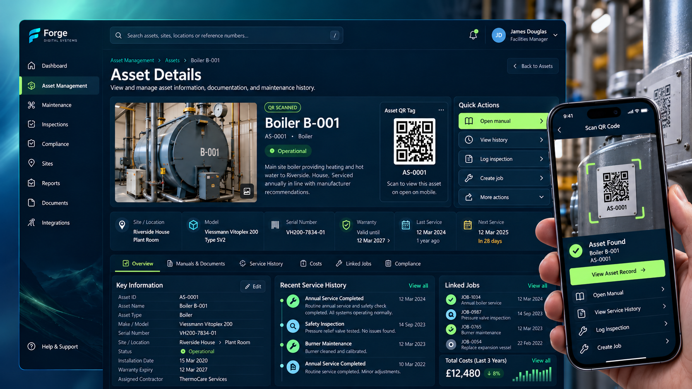

Maintenance teams
Find equipment information quickly and maintain a useful work history.
Stop hunting for manuals, chasing service records and guessing what equipment has cost you. Bring your asset details, QR access, maintenance history, documents and spending into one clear system.
Whether you manage a single hotel, a busy estate or several properties, keep equipment information together and accessible to the people who need it.
Search assets by site, location or type. See equipment status and upcoming maintenance in one organised view, rather than another spreadsheet.

Give equipment a unique QR code so teams can quickly find the relevant asset record, location, model, serial number, service dates and linked work while on site.

Bring past repairs, inspections, contractor visits and replacement parts into one timeline. Track spending to make better-informed repair and replacement decisions.

Keep operating manuals, service sheets, certificates, photos and warranty information linked to the relevant asset, so the team can find the right document without searching through folders.

Dashboard images are illustrative product concepts, not screenshots of a deployed customer system. Features are scoped to individual project requirements.
Find equipment information quickly and maintain a useful work history.
See assets across sites and make informed maintenance decisions.
Bring plant, rooms, equipment and associated documents into one place.
Tell us what you manage and what information you need at your fingertips. We'll discuss a system built around your operation.
Discuss asset management →